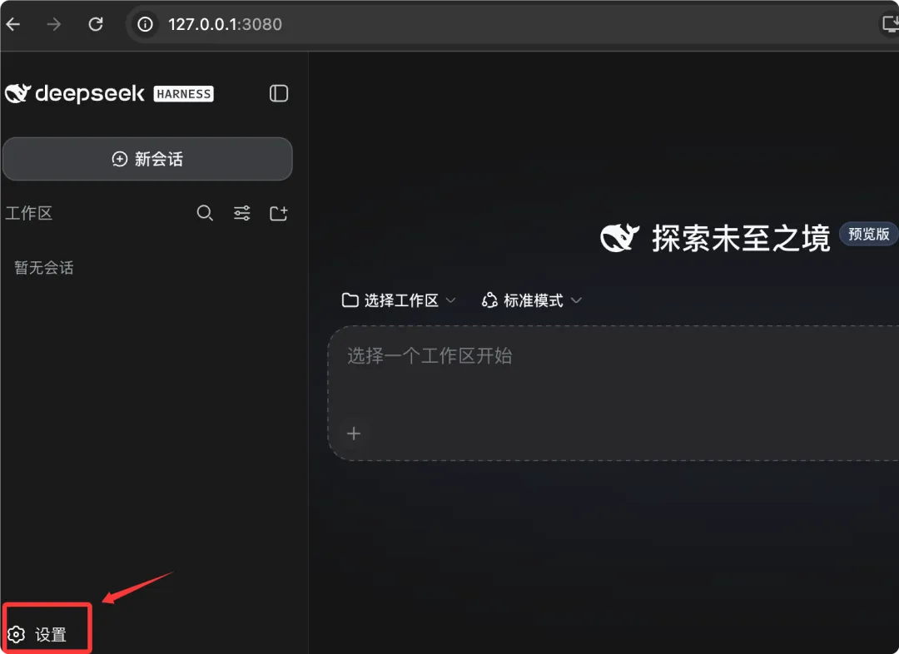
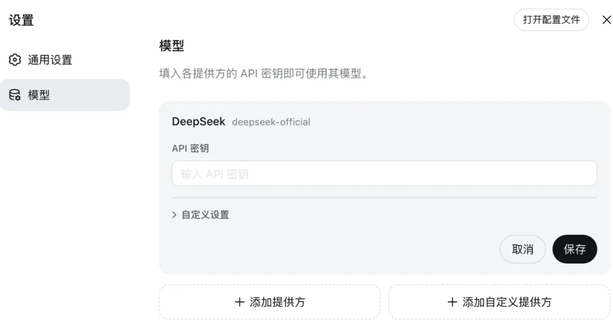
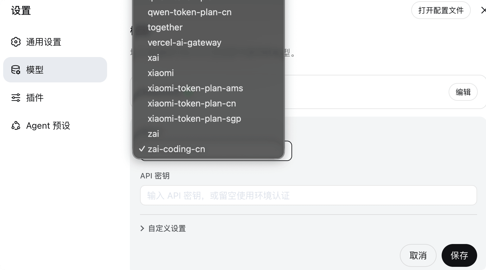
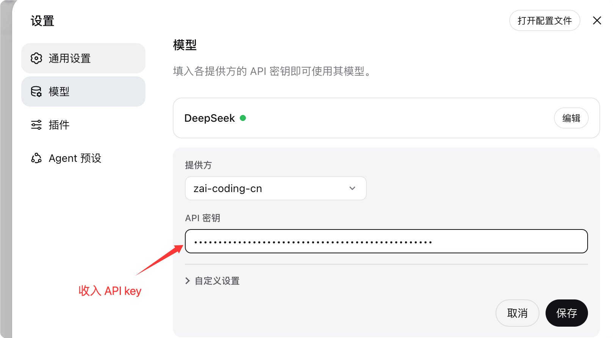
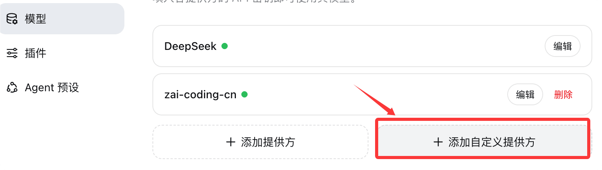

DeepSeek Harness model configuration
DeepSeek Harness can use DeepSeek's official configuration, or third-party models.
| Provider type | What is it | Credential requirements | Applicable scenarios |
|---|---|---|---|
| DeepSeek | DeepSeek official endpoint | DeepSeek API key (write-only) | Default, fastest to get started |
| Catalog provider | Providers in the installed catalog, such as Anthropic, OpenAI | API keys for each provider; native authentication requires their respective credentials. | Connect to mainstream vendors already included |
| Custom provider | Self-hosted endpoints, such as company gateways or self-hosted servers. | Provider ID, baseURL, protocol, credentials, model | Endpoints not in the catalog |
Open http://127.0.0.1:3080/. The entire interface is as follows. We can first click Settings to configure the API key:

If you don't have an API key yet, you can go tohttps://platform.deepseek.com/api_keysApplication.
Next, open Settings → Models. On the DeepSeek card there is an API key input field. Fill it in and save.

Add catalog provider
Catalog providers get endpoints, protocols, and model lists from dsh's installed catalog.
Choose Add Provider, select a provider such as Anthropic or OpenAI, enter its API key, and save.
The installed catalog automatically brings endpoints, protocols, and model lists; no manual entry needed.

For example, we set up Zhipu's coding plan package:

After the setup is complete, we can see the added models in the model list of the chat dialog:

Providers using native authentication require their own native credentials; filling in only the API key field will not complete the configuration.
| Provider | Required native credentials |
|---|---|
| Bedrock | AWS credentials and region |
| Vertex | ADC Project |
| Azure | api-version |
| Codex | OAuth |
Add a custom provider
For endpoints not in the catalog, such as company gateways or self-hosted servers, use a custom provider.

Select Add Custom Provider and fill in the following fields.

| Fields | Description | Required? |
|---|---|---|
| Provider ID | Lowercase, permanent identifier | Required |
| Display Name | The name displayed in the UI | Optional |
| Base URL | Endpoint's baseURL | Required |
| API protocol | e.g. openai-completions | Required |
| Credential | API key or environment variable reference | Required |
| Model | At least one model | Required |
Provider ID is permanent because requests, saved sessions, model defaults, and credential references all use it.
If you need to rename a provider, add a new provider and delete the old one.
Display name, base URL, protocol, credentials, and models remain editable.
Select "fetch available models" in the model catalog to query the base URL and credentials currently shown in the form.
Selecting a candidate only updates the draft; the provider is not stored until saved.
Catalog providers use the installed catalog and do not make network requests.
Image input: declare modality for vision models
Manually entered models are treated as text-only by default; to support images, you must explicitly declare it.
Because no part of the process can ask the endpoint which modalities it accepts, dsh uses a "declare first, then use" strategy.
Attaching images to such models will be rejected before sending, and the model will be named.
Vision models under a custom provider need an extra line; the form has no corresponding field.
Please add input for this model in $DSH_HOME/settings.yaml.
# 文件路径：$DSH_HOME/settings.yaml
# 顶层键 llm-pi-ai 是模型路由插件的 id，providers 下按提供方 id 组织
llm-pi-ai:
providers:
my-gateway:
apiKeyEnv: GATEWAY_API_KEY # 凭据引用：从 GATEWAY_API_KEY 环境变量读取
api: openai-completions # API 协议：OpenAI 兼容的补全协议
baseURL: https://gateway.example.example/v1 # 你的网关端点
models:
- id: legacy-chat # 纯文本模型，不写 input 即按纯文本对待
- id: vision-preview # 视觉模型
input: [text, image] # 声明同时接受文本与图片
input accepts text and image, and only applies to that model, so a single route can serve both types of models.
Omitting it, or writing an empty list, are synonymous.
In this case, retain the modality recorded in the installed catalog for that model; models not described in the catalog fall back to the route's defaultInput.
If all your manually entered models accept images, you can set a fallback value once on the route.
# 文件路径：$DSH_HOME/settings.yaml
# defaultInput 是回退值而不是覆盖值，默认为 [text]
llm-pi-ai:
providers:
vision-gateway:
apiKeyEnv: GATEWAY_API_KEY
api: openai-completions
baseURL: https://vision.example.example/v1
defaultInput: [text, image] # 对本路由下目录未描述的模型生效
models:
- id: first-model
- id: second-model
To narrow the modality of a model in a catalog provider, write it under modelOverrides, keyed by model id.
# 文件路径：$DSH_HOME/settings.yaml
# 目录提供方没有可填写的 models 列表，覆盖走 modelOverrides
llm-pi-ai:
providers:
anthropic:
modelOverrides:
claude-sonnet-4-5:
input: [text] # 把该模型的图片能力去掉
input and defaultInput are assertions about your endpoint, not checks against it.
A model that declares image capabilities the endpoint does not actually provide will not be blocked here; instead, the provider rejects the request.
Troubleshooting table
When model configuration goes wrong, dsh will give clear error messages. Use the table below to troubleshoot.
| Error | Meaning | Conquer |
|---|---|---|
| MISSING_CREDENTIAL | Missing provider key | Store the provider key via the Models page, or provide the referenced environment variable. |
| UNKNOWN_MODEL | The requested model is not configured | Select a configured model, or add the missing model to a custom provider. |
| Fetching available models returns 401 | The key is invalid, or the endpoint does not support model discovery. | Check the key; model discovery calls the OpenAI-compatible GET /models. For services that do not provide this endpoint, enter the model manually. |
| Image rejected before sending | The model does not declare image modality | Add input: [text, image] to the custom provider's models; DeepSeek's own routes are text-only and cannot be changed through configuration. |
| The provider rejected the request with images | The model declares image capabilities that the endpoint does not actually provide. | Remove image from the list that grants it image capabilities, and start a new session. |